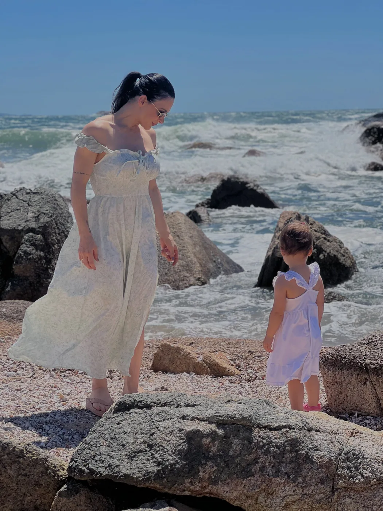

Tema recente
Perimenopausa
Por que seu corpo mudou se você não mudou nada?
Quer levar a Joyce para a sua empresa, evento ou grupo?
Falar sobre palestrasassets/img/joyce-recorte.webp · 1049×1527 (recorte PNG/WebP transparente)
Nutricionista · Saúde da Mulher
Nutrição para mulheres que já tentaram “a dieta” e querem, finalmente, alguém acompanhando o caminho.
Não prescrevo dietas. Conduzo tratamentos. Cada mulher chega com uma história, uma rotina e um corpo que mudou. O meu trabalho é escutar, estruturar e acompanhar, até o cuidado virar parte da sua vida.
Joyce Avila
A diferença
Do consultório para o feed
Frases que você escuta repetidas vezes até virar verdade. A Joyce já destrinchou cada uma no Instagram.
A granola está te engordando?
Confira o vídeo no InstagramReconhecimento
Um reconhecimento de quem mais importa: as pessoas da cidade onde ela atende. E que também chega a Balneário Camboriú e, pelo on-line, a qualquer lugar.
Quero ser atendida pela JoyceComo funciona
I
Você me chama no WhatsApp, conta o que está acontecendo e a gente escolhe o formato: presencial em Balneário Camboriú ou Joinville, ou on-line.
II
Escuta da sua história, da sua rotina, dos seus sintomas e dos seus exames. É aqui que o tratamento começa a ter a sua cara.
III
Uma estratégia alimentar construída para você, com metas possíveis. Nada de cardápio genérico.
IV
Retornos e ajustes ao longo do caminho, porque o corpo muda e o plano precisa acompanhar.

Minha história
Sou a Joyce Avila, nutricionista com foco em saúde da mulher. Atendo em Balneário Camboriú, Joinville e on-line, e divido no Instagram, com mais de 14 mil pessoas, o que aparece no consultório: as dúvidas reais, os mitos repetidos e o que dá para levar para o dia a dia.
Meu trabalho não termina na entrega de um cardápio. Eu acompanho, ajusto e conduzo, porque é assim que um tratamento funciona.
Ao vivo e gratuito
por Joyce Ávila
Toda sexta-feira, um novo tema. Uma conversa aberta para quem quer entender o próprio corpo antes mesmo da primeira consulta.
Acompanhar no InstagramTema recente
Por que seu corpo mudou se você não mudou nada?
Quer levar a Joyce para a sua empresa, evento ou grupo?
Falar sobre palestrasDúvidas
Não do jeito que você está acostumada. Existe, sim, um plano alimentar, mas ele faz parte de um tratamento: começa pela sua história, é acompanhado e muda quando você muda.
Sim. Além do presencial em Balneário Camboriú e em Joinville, o atendimento on-line funciona para qualquer cidade.
O foco do meu trabalho é a saúde da mulher. Se você tem outra demanda, me chama no WhatsApp que eu te oriento.
Valores, horários e endereços são passados no WhatsApp, junto com o formato que fizer mais sentido para você.
Logo abaixo, nas avaliações públicas do Google, e nos destaques “Depoimentos” do Instagram @nutricionistajoyceavila.
Avaliações no Google
★★★★★
“Uma profissional de altíssima excelência, que vai muito além de entregar uma dieta. Ela acompanha de perto toda a evolução, faz as adaptações necessárias conforme a sua rotina e mantém o foco no que realmente importa: ajudar você a alcançar seus objetivos e principalmente de forma sustentável.”
★★★★★
Uma profissional linda e maravilhosa, dedicada, extremamente comprometida em te ajudar a conquistar teu objetivo! Obrigada Joyce, pelo apoio!!!!
★★★★★
A Joyce me atendeu super bem, tirou todas as minhas dúvidas e montou o meu plano conforme a minha rotina. Adorei demais. <3
★★★★★
Cheguei bem apreensiva, fui muito bem atendida. Joyce uma profissional muito humana e muito linda, me senti muito à vontade e saí mais segura de mim 😍
★★★★★
Excelente atendimento, profissional maravilhosa, super competente e atenciosa. Não é apenas uma consulta, é aquele papo de amigas mesmo, a gente ri, chora e sai da consulta com gratidão no ❤️.
★★★★★
Joy é maravilhosa! Uma profissional incrível, extremamente presente no acompanhamento e sempre disposta a ajustar tudo para que se encaixe perfeitamente na rotina da paciente. Estou encantada com tanta excelência — é realmente diferenciada em tudo o que se propõe a fazer. ✨
★★★★★
Quero deixar aqui minha recomendação para a Nutri Joy! Além de um atendimento impecável, ela é sempre muito disposta, pronta para ajudar e tirar todas as dúvidas com muita paciência. É uma profissional extremamente querida, atenciosa e dedicada, que realmente se importa com cada pessoa que atende. Dá pra sentir o cuidado e o carinho em cada orientação! Super recomendo! ✨
★★★★★
Joy é uma nutricionista maravilhosa, atenciosa e sempre adaptando as refeições conforme minha rotina, além da consulta temos o acompanhamento toda semana onde respondemos o questionário e ela nos chama para conversar e adaptar o que for…
★★★★★
Joy é uma profissional maravilhosa, e não tem dúvidas que será minha última nutricionista 😍🙌
★★★★★
Quero deixar aqui a minha gratidão pelo trabalho incrível da minha nutricionista! Ela é simplesmente maravilhosa, muito atenciosa e dedicada em cada detalhe. O plano alimentar que ela monta é excelente, totalmente adaptado à minha rotina…
★★★★★
Não tenho palavras para agradecer tudo o que a Joyce fez por mim nessa jornada 🤍
Agendamento
Me conta o que está acontecendo. A resposta vem de mim, no WhatsApp.